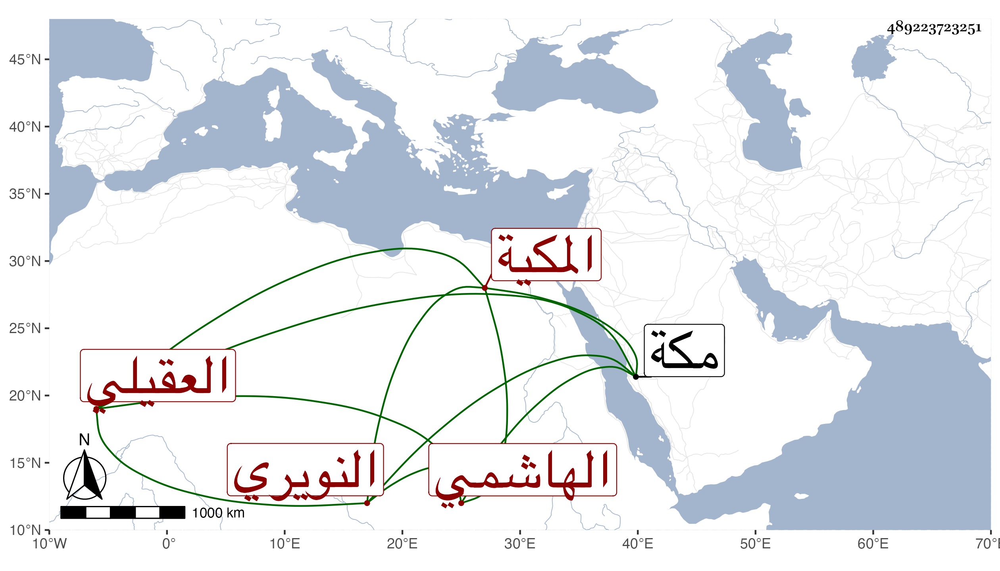

0902Sakhawi.DawLamic.ITO20230111-ara1.EIS1600.489223723251
Biography ID: 489223723251
156
خديجة المدعوة سعيدة ابنة عبد الرحمن بن علي بن أحمد بن عبد العزيز أم السعد الهاشمي العقيلي النويري المكية . ولدت سنة ثمان أو سبع وتسعين وسبعمائة بعد أخيها أبي الفضل بسنة أو أزيد ، وأمها فاطمة ابنة أبي القسم بن أحمد ابن عبد الصمد الانصاري ، وأجاز لها عائشة ابنة ابن عبد الهادي والبدر البهنسي والكمال الدميري وآخرون أجازت لنا . وماتت في يوم الثلاثاء عاشر ربيع الأول سنة ست وسبعين بمكة رحمها الله .
